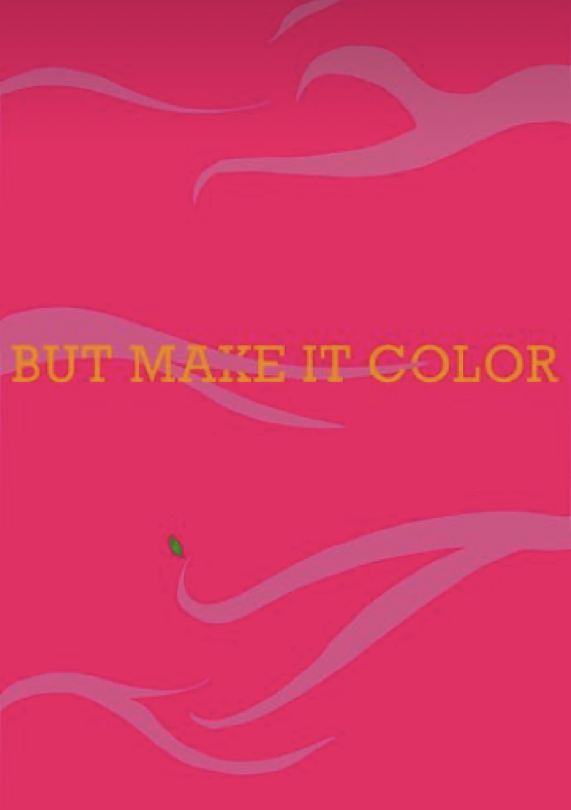
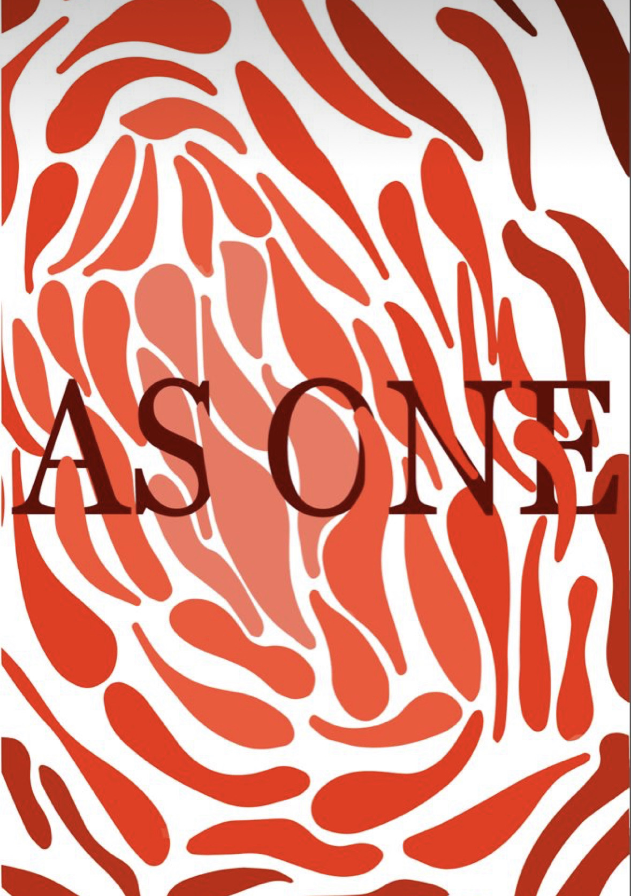
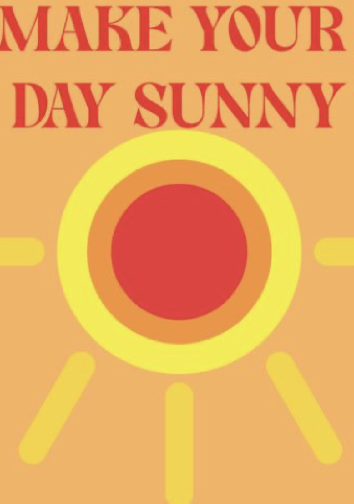

Moje ime je Ana Mlinarić. Dolazim iz Zagreba gdje trenutno i boravim. Volim dizajnirati stvari i smatram se jako kreativnom osobom zbog čega sam upisala Grafički fakultet. Najviše volim dizajnirati plakate što možete vidjeti u naredne tri slike. Također me jako zanima dizajn interijera i time se želim baviti u životu.U nastavku se nalaze radovi koje sam radila u slobodno vrijeme, ne vezano za fakultet.
  U slobodno vrijeme uz izradu plakata volim slušati pjesme i one me na neki način inspiriraju, a najdrža pjesma mi je: